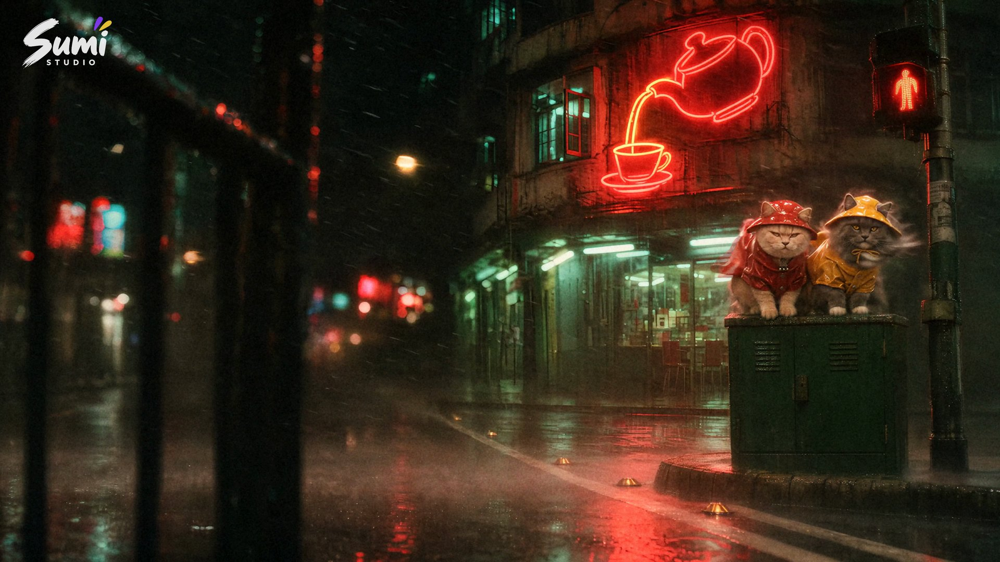

她在九龙一个路口上了的士。之后每天晚上，两只猫都去路口的绿色铁箱上守着。
完整画面 · 4 分 08 秒 · 网页版无声，不含歌词
网页播放 720p / 24 fps
制作母版 4K / 16:9
守着同一个路口
这是给 The Weeknd 的新歌《HONG KONG (feat. 王菲季候風)》拍的粉丝 MV。主角是苏州墙边茶馆的两只猫，豆包和茶茶。镜头一直放在猫的高度，大人只露出腿、手和后背，她的脸到 2 分 51 秒才第一次出现。
路口的铁箱是一个固定机位。猫每晚回到这里，身上换一身衣服，时间就这样往前走。全片 69 个镜头、88 条 Seedance 2.5 片段，切点都落在 69 BPM 的拍子上，前后做了 15 版。
豆包穿西装坐得笔直，茶茶戴着耳机看向窗外。城市繁华的那几年，两只猫走到哪，衣服换到哪。

同一个机位在片中反复出现。这一晚刮台风，两只猫穿着雨衣坐在箱顶，身后是霓虹茶壶招牌。
从这支 MV，带走一套方法
A reusable workflow for story music videos.
故事卡在拍子上
先写故事，再按歌的真实时间分段。分镜里每个切点都吸到拍子网格上，按整帧计算，首尾帧和提示词都从这张分镜出发。
画面干净，质感在后期加
首尾帧和片段保持干净。颗粒、柔光、抽帧、手持晃动和 Logo 由后期脚本按帧号加上，哪一段改了，就只重渲那一段再接回去。
歌词不经过 agent
工具运行时读取用户的歌词文件，只输出时间和位置。审片看的是歌词换成占位符的版本，错字和断句由用户校对。
给下一首歌拍 MV
story-mv 包含 Skill 指令、9 篇分步参考、10 个通用脚本，以及《HONG KONG》的故事、分镜、画风、提示词样例、调色参数和制作总结。原创代码与文档采用 MIT 许可。
将 Skill 文件夹放入 Claude Code 的 ~/.claude/skills/ 或 Codex 的 ~/.codex/skills/；也可下载 .skill 包导入支持该格式的客户端。
“用 story-mv 给这首歌拍一支剧情 MV。先给我故事、分镜和积分预算。”
开始前准备
Python 3.10+、NumPy、OpenCV、Pillow 与 FFmpeg。视频生成和 4K 超分通过已连接的 Sumi Studio MCP 完成，花的是你自己的积分；首尾帧可以用 GPT Image 或其他出图模型。
示例只有文字和参数文件。成片、片段、首尾帧、角色设定图、歌曲、歌词、字体和 Logo 都不在包里，拍新片需要自己准备歌曲、歌词文件和角色。
安装、依赖与使用说明署名与致谢
- 歌曲：The Weeknd《HONG KONG (feat. 王菲季候風)》，2026 年 10 月 31 日发行。词曲 The Weeknd、陳小霞、楊立德、潘源良；制作 The Weeknd、Oscar Holter、Sage Skolfield。可在 The Weeknd 的 B 站官方账号收听。
- 采样：王菲《季候風》（1993），作曲陳小霞、楊立德，作词潘源良，编曲袁卓凡，收录于专辑《執迷不悔》，新藝寶。
- 猫：豆包和茶茶，来自苏州墙边茶馆。
- 画面致敬王家衛的香港电影。色彩基准测自 Schumann 在 YouTube 上传的粉丝剪辑。
- 工具：GPT Image 2.6 画首尾帧，Seedance 2.5 和 4K 超分通过 Sumi Studio MCP 完成，后期用 Python、OpenCV 和 FFmpeg。片头片尾卡用 Futura 和魏碑，字体文件不随仓库分发。
本片是粉丝作品，与艺人及其厂牌无关。歌曲、录音和歌词的权利归原作者所有。MIT 许可覆盖原创代码与文档；此页影片、剧照、封面、Sumi Studio 标识及第三方素材不因此获得 MIT 授权。查看媒体使用说明。